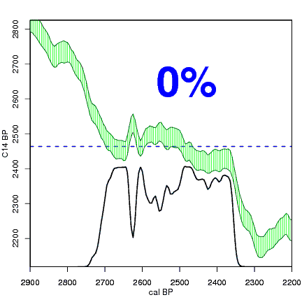
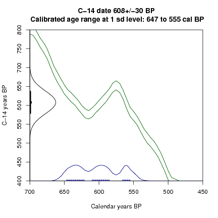

Construction of a calibrated distribution from a radiocarbon date. Red is the C14 date, grey is its probability distribution on the C14 axis, green is the IntCal04 calibration curve. For every calendar year (vertical dashed blue line), we check how far away the reported C14 age (red) is from the C14 age of the calibration curve at that calendar year (open blue circle and horizontal dashed blue line). The further away from the reported C14 age, the less likely that C14 age is. This is reflected by the curve of the normal distribution, which becomes lower further away from the reported C14 age (closed blue circle). The calibrated distribution is then constructed by plotting the height of the probability distribution on the C14 axis (closed blue dot) for every calendar year (black dot and line) as we move gradually from one end of the calendar axis to the other end.

Having found the calibrated distribution, we can calculate a 95%, 68% or other range of its highest posterior density or hpd range. This is done by gradually lowering a horizontal line, and every time calculating how much of the calibrated distribution falls below that line (grey blocks). Whenever the horizontal line is lowered such that exactly 95% (or 68%, etc.) of the calibrated distribution falls below the line, we use the calendar ages which fall within those grey ranges as the 95% hpd of the calibrated date. More often than not, there are several such calibrated age ranges, each with a distinct probability (size of the grey block).

A simulation of repeated measurements, and calibration at 1 sd, of fossil material 600+-30 C14 BP. Quite different calibrated distributions can arise from just random variations in the C14 age of a sample.
© 2007 Maarten Blaauw (please cite this page when using the graphs).